About | Experience | Projects | Baking
Baking is one of my favorite hobbies. Specifically, I am a master at baking Cookies. Fun fact: I baked cookies every week for a club I started called "Sleep Club" in highschool. Eventually I found out that people only came for the cookies, so we rebranded to "Cookie Club". All of the images of the cookies below are what I baked for the Club. Notice the amount of cookies in the photos. I always baked double the recipe.
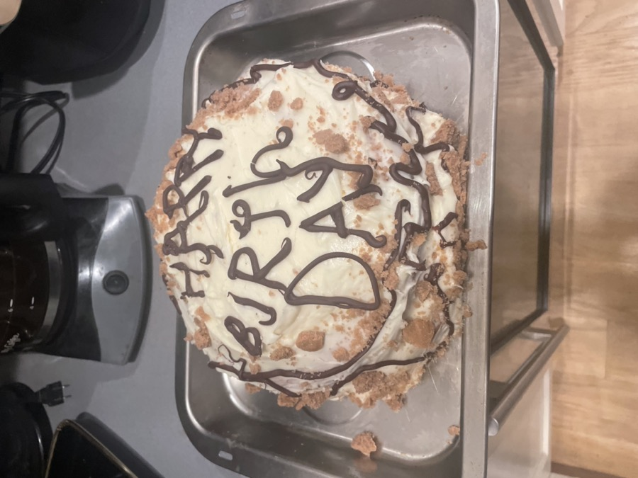
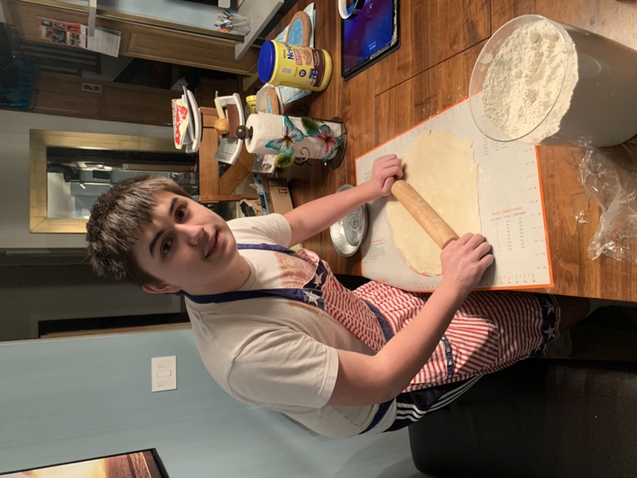
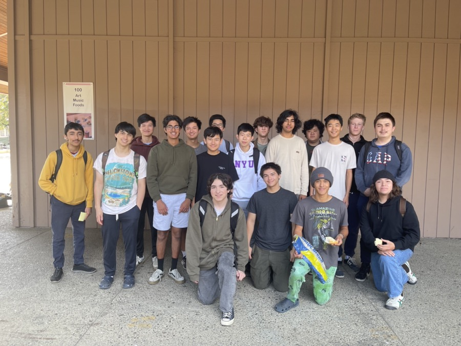
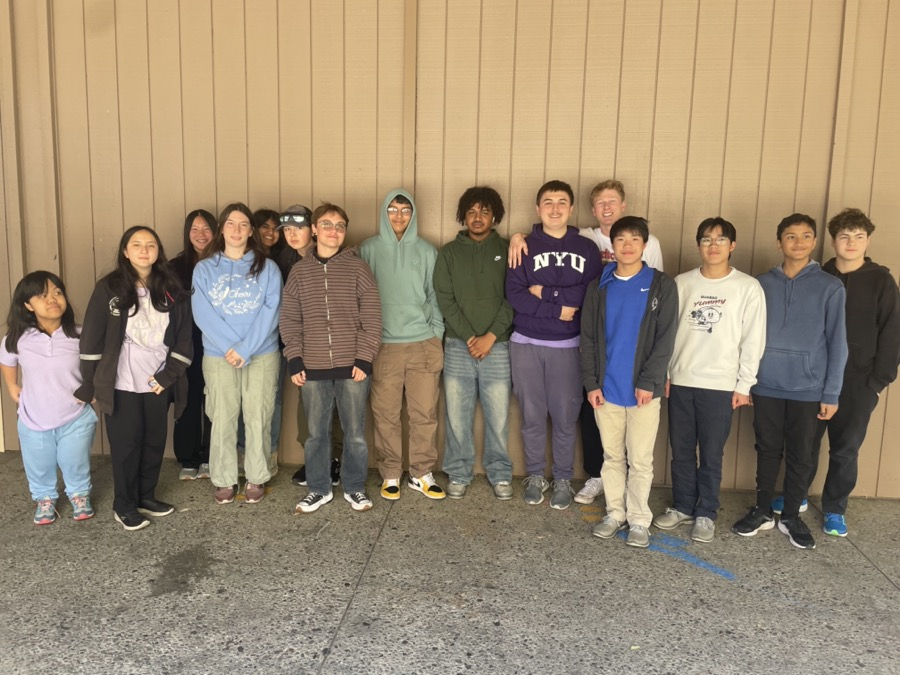
https://sallysbakingaddiction.com/soft-thick-snickerdoodles-in-20-minutes/
Of 4 snickerdoodle recipes I tested with my club above over 2 weeks, this was the most popular. The secret that makes these cookies better? They add cinnamon in both the coating and in the dough. Make sure to beat the snickerdoodles with a spoon when they come out of the oven.
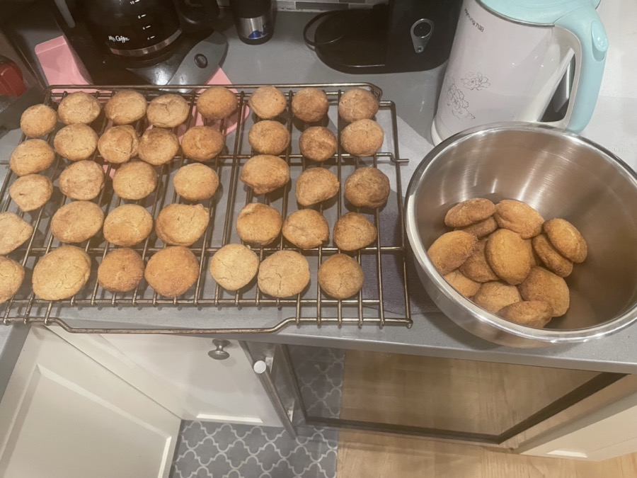
https://sallysbakingaddiction.com/chewy-chocolate-chip-cookies/
I personally prefer melted butter when it comes to chocolate chip cookies: gives it that Zip and Tang! I don't know what that means but this recipe is my go to for chocolate chip cookies. Bonus if you use Semi-sweet chocolate chunks instead of the chips. Best way to make em.
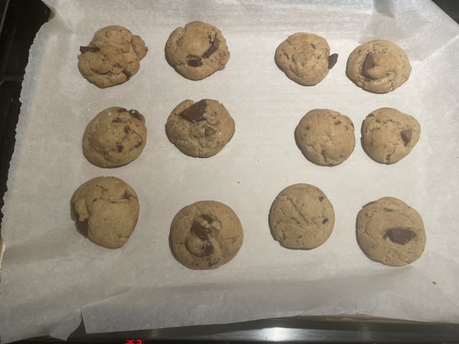
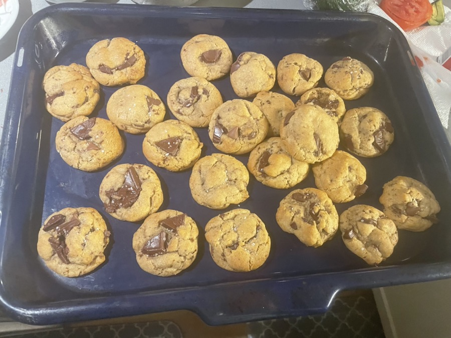
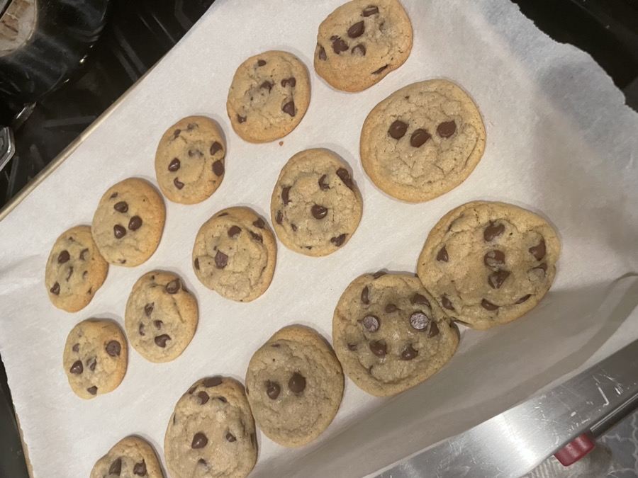
https://sallysbakingaddiction.com/double-chocolate-crinkle-cookies/
This recipe is my favorite recipe when it comes to seasonal baking. It works for Halloween, Christmas, all of the holidays! Yes, this is the third recipe from "Sally's Baking Addiction". I would not include the recipes if they werent the best.
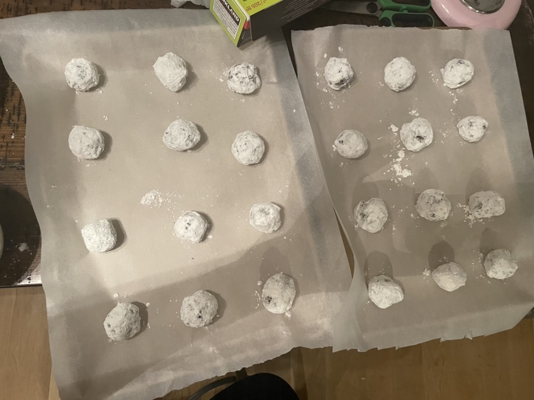
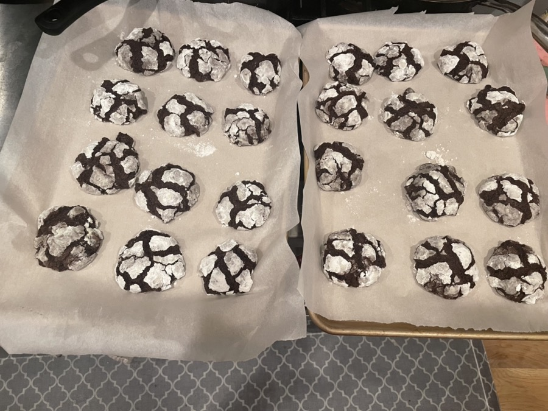
https://www.simplyrecipes.com/recipes/oatmeal_raisin_cookies/
I don't get the hype around oatmeal cookies. But to my friends who tested this recipe, they loved it. I always make this one because it doesn't include Mollasses, which I never have.
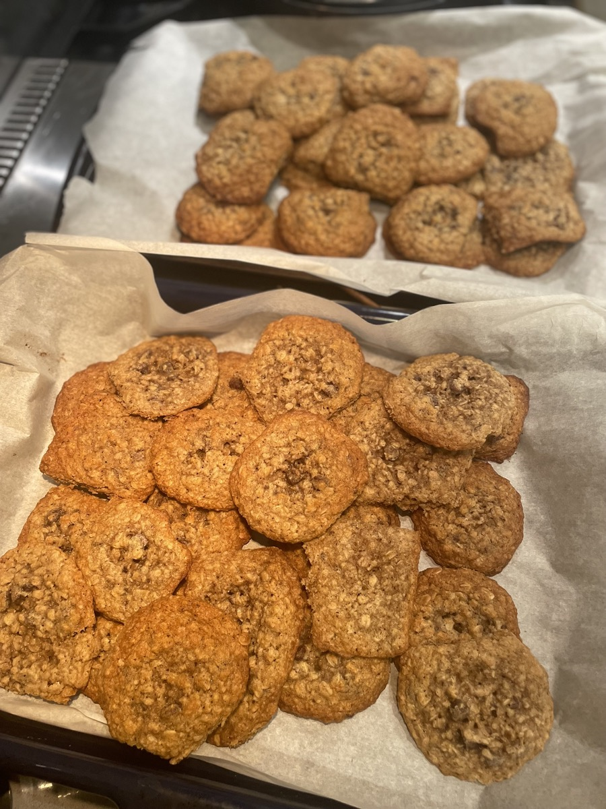
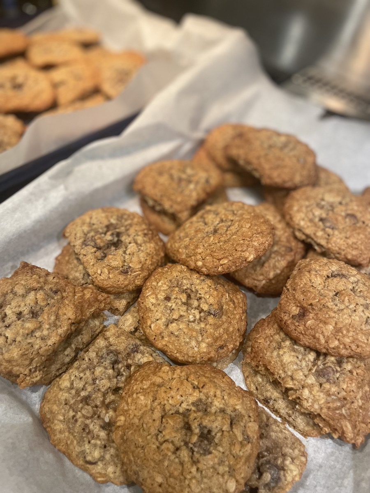
https://www.loveandlemons.com/brownies-recipe/#wprm-recipe-container-42107
This is my favorite Brownie recipe. It may seem like a lot of work with all of its ingredients, but it is WORTH IT! Also make this recipe if you have no butter, which happens a lot if you bake often (like me!).
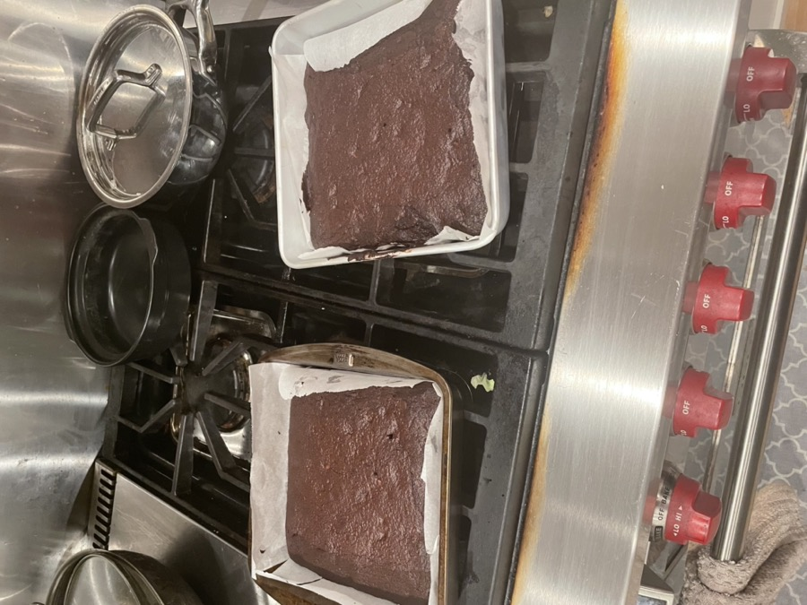
← Previous: Projects | Next: About →
© 2026 Chris Tutor | ctutor@usc.edu